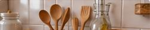

Paint Calculators
Estimate paint, cost and coverage for your next project.
Use our free paint calculators to find out how much paint you need, calculate the cost, and plan your project with confidence.
▣
Accurate estimatesSave time and money
▦
Easy to useInstant results
⌂
For any projectWalls, rooms, ceilings and more
Popular Paint Calculators
Choose a calculator below to get started.
Paint Cost Calculator
Estimate the total cost of paint for your project.
Open Calculator →Interior Paint Calculator
Estimate paint for interior walls, ceilings and trim.
Open Calculator →Exterior Paint Calculator
Calculate paint needs for exterior walls, siding and trim.
Open Calculator →Paint Primer Calculator
Find out how much primer you need for your project.
Open Calculator →Project Collections
Curated tool collections for common home and garden projects.
Spring Garden Projects
Tools and guides to get your garden ready for spring.
Backyard Makeover Tools
Plan, budget and build your dream outdoor space.
DIY Patio Planning
Calculators and guides for pavers, gravel and more.
Lawn Care Basics
Essential tools for a thicker, healthier lawn.